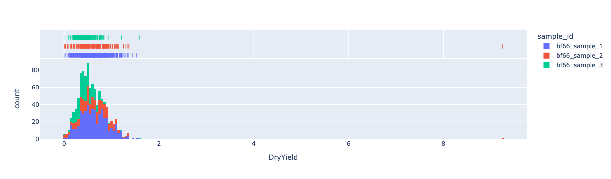

This lab will provide an introduction to programming concepts in Python. The concepts this lab will cover are:
data types and structures
variables and bindings
control flow, loops, and conditional execution
classes and objects
Task
This lab will start by running a short Python program that loads some crop yield data collected by harvesters from disk and visualises this data on interactive maps and charts. We will then work through the program exploring how it uses a range of Python programming concepts to complete its tasks.
Setup
Run the labs
You can run the labs locally on your machine or you can use cloud environments provided by Google Colab. If you’re working with Google Colab be aware that your sessions are temporary and, if required, you’ll need to take care to save, backup, and download your work.
Download data
If you need to download the date for this lab, run the following code snippet.
We’ll introduce modules in detail later. But, for now, modules are collections of Python data structures and functions that we can import and use in our program. For example, pandas provides a DataFrame structure for storing tabular data and specific functions for working with tabular data. Plotly Express plotly.express provides functions for generating visualisations, importing Plotly Express means we don’t need to write our own code to generate visualisations, we can just use existing functions which makes our lives easier.
# Import modulesimport osimport pandas as pdimport geopandas as gpdimport plotly.express as pximport plotly.io as pio# setup rendererif'google.colab'instr(get_ipython()): pio.renderers.default ="colab"else: pio.renderers.default ="jupyterlab"
A first Python program
Python is a programming language.
Programs
A program is a series of statements that are executed to complete a task
Programs complete tasks by loading, transforming, and visualising data
Data in programs can be of different types (numeric, text, boolean)
Data can be combined into data structures to represent complex concepts and objects
Functions operate on data to complete tasks
Detailed notes on Python programs
As stated above, a program is a series of statements that are executed to complete a task. The ultimate goal of the program here is to generate visualisations of crop yield data recorded by harvesters. However, to achieve this the program consists of a series of sub-tasks that include reading the harvester data from CSV files on disk, inspecting the data, transforming it to a spatial data structure, and then rendering web maps and charts.
Our program is loading, transforming, and visualising data. This means our program needs to be able store and represent different types and structures of data. If you look in the display of the DataFrame there are numeric, text, and date type data in the columns. Python provides tools for representing different types of data and structures for combining data to represent more complex concepts. For example, the DataFrame that is displayed is a data structure well suited to storing tabular data.
In short, a Python program stores data as objects and then uses this data in a range functions that operate on this data to complete tasks.
Here, a short Python program is demonstrated that:
reads in crop yield data collected by a harvester in Western Australia’s Wheatbelt
converts the data into a spatial format
visualises the data on a web map and charts
# Load the canola yield data from the harvesterharvester_data_path = os.path.join(os.getcwd(), "week-1")# Get a list of canola yield dataharvester_data_files = os.listdir(harvester_data_path)# Check we have a list of csv filesprint(harvester_data_files)# Combine the csv files into one data framedfs = []for i in harvester_data_files:if i.endswith(".csv"):print(f"Loading file {i} into a Pandas DataFrame") tmp_df = pd.read_csv(os.path.join(harvester_data_path, i)) dfs.append(tmp_df)df = pd.concat(dfs, axis=0)# inspect data framedf.head()
['.DS_Store', '.ipynb_checkpoints', 'canola-yield-df-1.csv', 'canola-yield-df-2.csv', 'canola-yield-df-3.csv']
Loading file canola-yield-df-1.csv into a Pandas DataFrame
Loading file canola-yield-df-2.csv into a Pandas DataFrame
Loading file canola-yield-df-3.csv into a Pandas DataFrame
Make this Notebook Trusted to load map: File -> Trust Notebook
# Visualise crop yield data on a chartgdf_fig = gdf.drop(columns=["geometry"])fig = px.histogram(gdf_fig, x="DryYield", color="sample_id", marginal="rug")fig.show()

Recap quiz
In a Python program, are data types just used to store observations of scientific variables such as crop yield or temperature?
No. In a Python program built-in data types are used to store a range of information relevant to the execution of a program. This could include “scientific” data such as an array of crop yield values. However, data in a Python program could refer to file paths and directory structures, URLs to websites or data stored in the cloud, or credentials to log in to databases.
In this lab we will break down the Python program that generates visualisations of crop yield data recorded by harvesters into its fundamental building blocks, identify how different types of data are represented in Python programs, and demonstrate how we can do things with this data to produce useful outputs.
Computational thinking
A useful skill to develop when writing or analysing Python programs is computational thinking. This refers to breaking a larger task down into small sub-tasks (and possibly breaking sub-tasks into sub-tasks). Often, it is easier to reason with smaller more focused tasks than to grapple with a large complex problem as a whole.
A good homework exercise to help build your understanding of Python concepts is to work through the program above and break it down into series of smaller tasks (e.g. find csv files, read in csv data, make data spatial)
Statements and comments
A Python program consists of statements. A Python statement is a line of Python code which can be executed by the computer.
A comment is a line of text that starts with the # symbol. It is not executed by the computer. We can use comments to make notes in our script to help us understand what the program is trying to achieve.
For example, this code snippet contains two comments and one statement:
# Inspect the yield data format# Display the first n rowsdf.head()
Objects
Everything in a Python program is an object. Built-in scalar data types are the most fundamental building blocks of a Python program. We can use these scalar data types to represent single numbers, words, and sentences. This is where we’ll start unpicking this Python program.
Data types
Python programs perform operations on data to complete tasks. This can be scientific data such as crop yield or temperature measurements or it can be other forms of data necessary for the program to execute such as a file path to where data is stored on disk.
Built-in data types
Python comes with built-in data types that can be used to store different values. These are sometimes called scalar types as they store single values.
float - storing floating point numeric values.
int - storing integer numeric values.
str - storing text data as strings.
bool - storing True or False as boolean values.
None - storing null values.
bytes - storing raw binary data.
Numeric data types
int and float are numeric data types in Python and are used to store integer and floating point values, respectively.
The canola yield data that we have imported is of numeric type with units of tonnes/ha. Let’s represent a crop yield measurement of 0.227 tonnes/ha as data in our program and inspect its type.
print(type(0.227))
<class 'float'>
String data types
We also need to represent text data in our programs. In the crop yield dataset the sample id is text. In Python, text data is stored as a str type (or string type).
Text data is stored as string types by enclosing the characters in double" or single ' quotes.
print(type("a string"))print("a string")
<class 'str'>
a string
Let’s check how the sample id names in the canola yield dataset are represented. First, let’s remind ourselves what the DataFrame of the yield dataset looks like.
df.head()
Latitude
Longitude
DryYield
Crop
Time
Heading
Variety
Elevation
sample_id
geometry
0
-31.606760
117.497719
0.227
5
11/11/2020 8:01
242.7
43Y23 RR
264.32
bf66_sample_1
POINT (117.49772 -31.60676)
1
-31.605409
117.496881
0.372
5
11/11/2020 8:02
344.3
43Y23 RR
265.39
bf66_sample_1
POINT (117.49688 -31.60541)
2
-31.603557
117.496855
0.651
5
11/11/2020 8:04
359.9
43Y23 RR
262.40
bf66_sample_1
POINT (117.49686 -31.60356)
3
-31.601549
117.496855
0.923
5
11/11/2020 8:05
359.8
43Y23 RR
264.61
bf66_sample_1
POINT (117.49685 -31.60155)
4
-31.599818
117.496855
1.216
5
11/11/2020 8:06
360.0
43Y23 RR
267.51
bf66_sample_1
POINT (117.49686 -31.59982)
# get the first field name valuefield_name = df.loc[:, "sample_id"].to_list()[0]print(type(field_name))print(field_name)
<class 'str'>
bf66_sample_1
Boolean data types
Boolean (bool) data types are used for storing True or False values. In Python, True or False are Boolean values and not string data types.
Boolean data types are used to store the result of testing a condition that evaluates to true or false. For example, greater than and less than operations evaluate to true or false. We could test if our crop yield value of 0.227 is greater than 0.2 (it is and this expression should evaluate to true).
print(type(0.277>0.2))print(0.227>0.2)
<class 'bool'>
True
We can use the isinstance(value, type) function to test if a data value matches a data type. Let’s test if our crop yield value is numeric or string.
If you execute x = 3.4, what data type will x be?float
Which data type would be most suited to record the number of apples harvested from an orchard?int - we should not be able to harvest fractions of apples.
Which data type would we use to record a farm name?str - assuming the farm name is text data.
y = 4 + 5 and z = y > 10 - what value will z be?False - y evaluates to 9 which is less than 10. Therefore, z will be False and of bool type.
Data structures
Python provides a series of built-in data structures that can be used to group together and store related data.
Data structures can be used to model a range of practical and real-world problems or phenomenon by combining simple data types. For example, we could use a collection of numeric data to represent a time-series of precipitation, string data to represent the weather station name, and combine string and numeric data together in a data structure to create a bespoke weather station data structure.
list - a variable length collection of objects that can be modified
tuple - a fixed length collection of objects that cannot be modified
set - a collection of unique objects
dict - a collection of objects stored as key:value pairs
Lists
Lists in Python:
can be modified during a program’s execution
can store duplicate values
are created by placing elements in square brackets []
elements of a list are ordered
elements of a list can be of different data types
We could store the sample names in our crop yield data set as a list:
["bf66_sample_1", "bf66_sample_2"]
['bf66_sample_1', 'bf66_sample_2']
Lists allow us to store duplicate values. The following is a valid list.
A key feature of lists are that they can be modified in place. This makes lists useful data structures for tasks when the number of objects that we want to store in a collection can change during our program’s execution. We can use functions such as .append() to add objects to the end of a list.
Using lists in our Python program to read in CSV files on harvester crop yield data
In our Python program above, we took advantage of the fact that lists can be modified in place to loop over the CSV files in a directory, import them in as pandas DataFrames, and append the DataFrames to the list.
# Combine the csv files into one data framedfs = []for i in harvester_data_files:if i.endswith(".csv"):print(f"Loading file {i} into a Pandas DataFrame") tmp_df = pd.read_csv(os.path.join(harvester_data_path, i)) dfs.append(tmp_df)
Here, we start with an empty list dfs denoted by just square brackets []. Then, successively, a new object is added to dfs using the append() function. We finish with a list storing three pandas DataFrames. This demonstrates how we change the length and contents of a list during the execution of a program. We have gone from a list with zero elements to a list a list with three elements.
We can store any Python object in a list. We can also mix the types of objects stored in lists. The following is a valid list.
[1, 2, "not a number", None]
[1, 2, 'not a number', None]
Lists are ordered collections of data. If you add an element to a list it will be appended to the last position. List items can be accessed by their index location with the first element having index 0.
Aside: indexing in Python
An index is an element’s location within a data structure
Often, in Python, elements are accessed by their index position using the square brackets operator and passing an index in as an argument (e.g. the first element of x is x[0])
In Python, indexing starts at 0 - this means the index for the first element in a data structure is 0
It is important to become familiar with the concept of indexing - you will use it often as you handle data in Python
Let’s demonstrate this by accessing the elements of the sample_id_list we created above.
print(sample_id_list)print("The first element in sample_id_list is at index 0: ", sample_id_list[0])print("The second element in sample_id_list is at index 1: ", sample_id_list[1])print("The third element in sample_id_list is at index 2: ", sample_id_list[2])
['bf66_sample_1', 'bf66_sample_2', 'bf66_sample_2', 'bf66_sample_3']
The first element in sample_id_list is at index 0: bf66_sample_1
The second element in sample_id_list is at index 1: bf66_sample_2
The third element in sample_id_list is at index 2: bf66_sample_2
Slicing
We can use index locations of elements in a list to create slices of list elements. For example, sample_id_list[0:2] would slice out the first two elements of the list. Note, the element referenced by the index in the final number of the slice is excluded.
print(sample_id_list[0:2])
['bf66_sample_1', 'bf66_sample_2']
Tuples
Tuple in Python:
elements are unchangeable (immutable)
tuple elements are ordered
store a fixed-length number of elements
created by placing Python objects inside parentheses ()
(116.804075, -33.889203)
(116.804075, -33.889203)
Here, we have created a tuple with two numeric objects. Similar to lists we can access tuple elements by their index locations. Note the use of the [] operator to access elements by their index location.
As tuples are fixed-length and unchangeable, we cannot append elements to them in the same way we could with lists. This makes them useful data structures for storing data values which we don’t want to change. For example, coorindate pairs that describe a location’s x and y values (e.g. longitude and latitude) have two elements. Therefore, a tuple could be a suitable data format to store coordinate pairs.
The shape of pandas DataFrames is also a tuple. A DataFrame has two dimensions: number of rows and number of columns. Thus, a tuple is a sensible data structure for storing the shape of DataFrame objects.
df.shape
(1000, 10)
To demonstrate that we cannot change tuple values, let’s try and update the number of rows in the tuple storing the shape of df.
df.shape[0] =5
We have returned a TypeError informing us the tuple objects do not support item assigment (adding new items to the tuple).
Similar to lists, elements of a tuple are ordered and can be duplicated.
Sets
Set in Python:
unordered collection objects
set elements cannot be duplicated
sets are immutable
sets are created by placing elements inside curly brackets {}
Let’s create a set and demonstrate that it cannot store duplicate values.
As sets are not ordered, we cannot access their elements by numeric index locations.
# This fails as set objects are not subscriptable{"bf66_sample_1", "bf66_sample_2", "bf66_sample_3"}[0]
We can access set elements by looping over them or checking if a value is in the set.
for i in {"bf66_sample_1", "bf66_sample_2", "bf66_sample_3"}:print(i)
bf66_sample_1
bf66_sample_3
bf66_sample_2
print("Checking if 'bf66_sample_1' is in the set:")print("bf66_sample_1"in {"bf66_sample_1", "bf66_sample_2", "bf66_sample_3"})
Checking if 'bf66_sample_1' is in the set:
True
Similar to tuples, sets are unchangeable (immutable). Once created, we cannot change the set’s values in our programs.
Dictionary objects
Dictionary objects, or dict objects:
store data as a collection of key:value pairs
Dictionary objects can be changed and modified
Dictionary object elements are ordered
We can access dictionary elements by their key
Dictionary objects are created by placing key:value pairs inside curly brackets {}
Keys of a dictionary object cannot be duplicated
Elements (values) of dictionary objects can be of a different type
Values can be of different lengths
Using Dictionary objects to represent tabular data
Tabular data has data values stored in rows and columns. Generally, a column corresponds to a particular variable or type of data and rows correspond to observed or measured values. We can use dictionary objects to represent tabular data in Python.
For example, we can use the key:value pair pattern to represent a column header and column values.
"Elevation(m)": [213, 222, 214, 254]
Here, we’ve used a string object to represent the column header (the key) and a list object to represent column values (the value). Combining one or more key:value pairs in a dictionary object is a way of representing tabular data in Python.
You will notice that the list of yield values we just added to the dictionary has a different number of elements to the other elements in the values slots.
Recap quiz
x = [1, 2, 3, 4] - what data structure is x?
List
q = {1, 2, 3, 4} - what data structure is q?
Set
Which data structure organises its elements using key:value pairs?
Dictionary objects
Are lists immutable data structures?
No, we can modify the values of a list and change its size (number of elements) during the program’s execution.
Edit the following code snippet to retrieve and print the 3rd element in x.
x = [1, 2, 3, 4]# add code here #
answer
print(x[2])
Edit the following code snippet to retrieve and print the first element in z.
z = (4, 5)# add code here #
answer
print(z[0])
What is the data type of the value associated with the field key in the dict z? Retrieve this value from the dict and print its type.
z = {"name": "farm 1","field": 439,"crop": "canola"}# add code here #
answer
print(type(z["field"]))
Variables
In the program to read in and visualise crop yield data, you will have noticed this syntax pattern: variable_name = data.
= is the assignment operator (not equals) which is assigning (or binding) the variable_name to the data object.
The statement basemap = "https://server.arcgisonline.com/ArcGIS/rest/services/World_Imagery/MapServer/tile/{z}/{y}/{x}" is assigning the data "https://server.arcgisonline.com/ArcGIS/rest/services/World_Imagery/MapServer/tile/{z}/{y}/{x}" to the variable name basemap. The data is string which is storing the URL for a satellite imagery basemap.
Calling print() on the variable name returns the data object that the variable name refers to.
We can assign any Python objects to variable names. When the variable name is used in a Python statement, the data value which the variable points to is used in the operations.
x =1y =2z = x + yprint(z)
3
Variables make a program’s code easier to organise, write, and understand. We could have performed the above addition operation by just writing 1 + 2. However, this doesn’t provide us with a way to capture the result of that operation and use it again in our program without re-running 1 + 2.
Variables provide us with a mechanism by which we retrieve and use data objects (that are stored in the computer’s memory) at various places in our program. A variable name points to the location in the computer’s memory where a data object is stored.
While using the result of 1 + 2 is a trivial example, there are many cases where using variables is important. This statement reads a CSV file into our Python program: tmp_df = pd.read_csv(os.path.join(harvester_data_path, i)). To access the data stored in the CSV file we can use variable name tmp_df which points to where the data in the CSV file was loaded into memory. We don’t need to read the CSV file from disk each time we want to access its data.
Let’s make these concepts concrete.
When we assign the string "https://server.arcgisonline.com/ArcGIS/rest/services/World_Imagery/MapServer/tile/{z}/{y}/{x}" to the variable name basemap, the variable name is a pointer to the string’s data object.
If we create another variable called basemap_1 and assign it to basemap, both variables will point to the same data object (the string URL).
If we assign basemap_1 to a new data object the string data for URL will no longer be accessible in our program and will eventually be removed from the computer’s memory.
Variable names
There are rules that need to be followed when creating variable names:
variable names can only be text letters (A-Z, a-z), numbers (0-9), or underscores (_)
variable names cannot begin with a number
variable names cannot include whitespace
variable names cannot be reserved keywords such True, False, if
There are also some conventions that can be followed to help write programs that are easy to follow:
use a consistent style for writing variable names - snake_case where words are separated by underscores is recommended by the PEP8 style guide for Python code
use a descriptive variable name so it helps you understand what kind of data it is referring to
Control flow
So far we have demonstrated how we can represent information and concepts in our program as different data types and using different data structures. However, we are not using our program as a data storage device. We are using it to complete tasks with this data.
Control flow refers to the sequence of steps that our program takes from start to finish when it is run.
The most simple form of control flow is executing statements from top to bottom as they are written in your script.
print("this statement is executed first")print("and this statement is executed second")
this statement is executed first
and this statement is executed second
Loops
Loops use a for statement that allows us to iterate over items in a sequence. For example, if x is a list [1, 2, 3] then:
for i in x:print(i)
will print the values of 1, 2, and 3 in turn for each iteration of the loop, i, takes on the value of the corresponding element in x.
For loops are useful if we want to iterate over (repeat) a block of statements using different values from a sequence of items in turn. If we wanted to add 10 to each element of x we could write a for loop as:
for i in x:print(i +10)
Let’s demonstrate this.
x = [1, 2, 3]for i in x:print(i +10)
11
12
13
It is important to note that the statements inside the for loop must be indented.
Let’s refer back to our program to read in crop yield data and see a use of for loops.
# Combine the csv files into one data framedfs = []for i in harvester_data_files:if i.endswith(".csv"):print(f"Loading file {i} into a Pandas DataFrame") tmp_df = pd.read_csv(os.path.join(harvester_data_path, i)) dfs.append(tmp_df)
Here, the for loop is iterating over a list of file paths to CSV files storing crop yield data. For each of the CSV files in the list, the data is read into a variable tmp_df in turn, and, then appended to the list dfs. This is an example of how we can loop over a series of files in a folder on our computer and read their data into our Python program.
Let’s modify the for loop to illustrate this.
# Load the canola yield data from the harvesterharvester_data_path = os.path.join(os.getcwd(), "week-1")# Get a list of canola yield dataharvester_data_files = os.listdir(harvester_data_path)# Check we have a list of csv filesprint(harvester_data_files)# loop over elements in harvester_data_files# i takes on the value of a path to a csv filefor i in harvester_data_files: if i.endswith(".csv"):print(" ")print("**********************************************************")print(f"We are currently loading file {i} into a Pandas DataFrame") tmp_df = pd.read_csv(os.path.join(harvester_data_path, i))print(tmp_df.head()) dfs.append(tmp_df)print(" ")print(f"We have a list of {len(dfs)} Pandas DataFrames read from csv files")
Conditional execution is a form of control flow that allows for branches in the sequence that statements are executed. A boolean condition is tested, and, if it evaluates to True then one set of statements are executed and if it evaluates to False a different set of statements are executed.
Conditions are tested within if blocks:
ifTrue: these statements are executedelse: these statements are executed
A simple example:
x =11if x >=10:print("x is greater than or equal to 10")
In this instance, the statements inside the if block will be executed as x is 11 and so greater than 10.
However, if we change the value of x to 9 the statements inside the if block will not be executed.
x =9if x >=10:print("x is greater than or equal to 10")
x =11if x >=10:print("x is greater than or equal to 10")
x is greater than or equal to 10
# nothing should be printedx =9if x >=10:print("x is greater than or equal to 10")
Similar to for loops, the statements inside the if block should be indented.
We can use else blocks for statements that can be executed if the if statement evaluates to False.
x =9if x >=10:print("x is greater than or equal to 10")else:print("x is less than 10")
x =9if x >=10:print("x is greater than or equal to 10")else:print("x is less than 10")
x is less than 10
There are many uses for if statements in Python programs. An if statement was used when we read in CSV files of harvester data.
# Combine the csv files into one data framedfs = []for i in harvester_data_files:if i.endswith(".csv"):print(f"Loading file {i} into a Pandas DataFrame") tmp_df = pd.read_csv(os.path.join(harvester_data_path, i)) dfs.append(tmp_df)
Here, the if statement is being used to check the file path is referring to a CSV file. Only if this is True does our program try to read the file into a pandas DataFrame.
Recap quiz
Write a for loop to subtract 3 from every element in a tuple s and print the result?
s = (1, 2, 3)# add code here #
answer
for i in s: print(i -3)
How would you iterate over list of file paths?
Using a for loop.
Write a for loop to subtract 3 from every element in the tuple s and append the result to a list q?
q = []s = (1, 2, 3)# add code here #
answer
for i in s: q.append(i -3)print(q)
Write a loop to subtract 3 from every element in the tuple s and append the result to a list q if the result is less than 0?
q = []s = (1, 2, 3)# add code here #
answer
for i in s:if i -3<0: q.append(i -3)print(q)
Classes and Objects
We have mentioned a few times that Python programs comprise objects. We will now define what an object is and how the concept of an object relates to the data types and structures we have looked at above.
Objects
An object is a more general concept in programming. An object in a computer program has:
properties or attributes (data)
behaviour (methods or functions that do things with object data).
Objects provide a way to add structure to a program by combining related data and behaviours.
Alongside the built-in data types and structures, we can create objects that are customised and useful for specific tasks or representing specific kinds of data or real-world problems. Often, custom data types will combine the built-in data types and structures, or other custom objects, to create objects that represent more complex concepts.
Classes
A class is a definition of an object. The class defines the object’s data and methods. An object is an instance of a class in our programs.
An object’s data (sometimes called its properties or attributes) can be built-in Python data types or structures or custom classes. An object’s methods are functions that can be used to transform data or implement other behaviour that is relevant to the object. For example, an object representing a table is more complex than a list.
pandas DataFrames
For most use cases there are existing classes that have already been developed and can be used in our programs. Keeping with the idea of working with tabular data, pandas provides a DataFrame class to work with tabular data. In our Python program to visualise the crop yield data we read the tabular data stored in CSV files into pandas DataFrames.
A pandas DataFrame is a far more comprehensive class for handling tabular data. Compared to our small example of using a dictionary object to store tabular data, a pandas DataFrame implements well defined data structures for tabular data and provides a suite of useful methods (functions) for analysing and processing tabular data.
DataFrame Properties
The class DataFrame is a data structure for “Two-dimensional, size-mutable, potentially heterogeneous tabular data”. It has the following properties:
data - the tabular data stored in the data frame
index - the row index (row labels)
columns - the column headers
dtype - the data types of each column
A pandas DataFrame stores its values in rows and columns. There is a list of column headers (which should provide a helpful description of what kind of data is in each column) and a row index.
The values in columns are pandas Series objects. A Series is an array of the same type data.
The pandas DataFrame object stores a range of properties that are useful for working with tabular data. You can look up the documentation for a DataFramehere. The properties listed do not have parentheses after their name (). Let’s look at the properties under attributes and underlying data. We can see the DataFrame has a values property which is the actual data values in the table and a shape property which tells us the shape of the table (number of rows and columns).
Most of the time we will explore classes using their documentation websites. Let’s read a CSV file into a pandas DataFrame and explore its properties.
# Load the canola yield data from the harvesterharvester_data_path = os.path.join(os.getcwd(), "week-1", "canola-yield-df-1.csv")df = pd.read_csv(harvester_data_path)# check that df is a DataFrametype(df)
pandas.core.frame.DataFrame
# Get the shape property of the DataFramedf.shape
(500, 9)
A tuple data structure is used to store the shape property of a DataFrame.
However, a DataFrame is more than just an object for storing data. It is also where we can find a wide range of functions for working with tabular data - the class methods. Go back to the documentation for a DataFramehere. The DataFrame methods are indicated by the parentheses after their name ().
There are methods to help us inspect the DataFrame values. The info() method prints a concise summary table of the DataFrame, there a range of methods for performing mathemtatical computations / descriptive stats, and methods for reading data on disk into DataFrames.
Let’s explore how we can use some of these methods to work with tabular data in DataFrames.
The DataFrame referenced by df has an info() method. Let’s use it.
# Load the canola yield data from the harvesterharvester_data_path = os.path.join(os.getcwd(), "week-1", "canola-yield-df-1.csv")df = pd.read_csv(harvester_data_path)df.info()
The info() method has printed out a summary of the DataFrame for us. A DataFrame also has a mean() method to quickly compute the average of values in a column.
You will notice that we passed numeric_only=True when using the mean() method. Head the the mean() documentation to see what this does.
Methods and functions
Functions are executed to perform a task using data. You can spot functions by () appearing after the function name. Functions can take input data - this is the function’s arguments - and use these inputs to complete it’s task.
Functions can return data back to the Python program, display data on your screen, or save data to disk.
For example, the print() function takes data as an argument and prints it on your display as text. For example, print("hello") would print hello on your screen. The df = pd.read_csv("a_csv_file.csv") is a function within the pandas package the takes in a path to a CSV file as an argument and reads the data from that file into a DataFrame referenced by df.
Methods are functions that belong to a class. For example, the mean() method of the pandas DataFrame can be called by accessing it via a DataFrame() object (e.g df.mean()). Methods often provide functionality related to the “topic” of the class they’re associated with. For example, DataFrame methods provide functions related to working tabular data in DataFrame objects; dictionary objects have specialist methods geared for retrieving and setting data elements in dictionaries; string objects have methods for manipulating text (e.g. the lower() of a string object will convert all text characters to lower case).
The general pattern for executing a function / method is:
The function is called and any data are passed in as arguments inside ()
The function performs operations on the data passed in
The function returns the result of operating on the data
As everything in Python is an object, lists and string objects have methods. You can see the methods associated with an object by typing the object name, dot operator, and pressing tab.
For example, if farm_name = "my farm", farm_name.<press_tab> will print a list of string object methods.
Try this below and explore string and list methods, and how they can be used to transform your data.
farm_name ="my farm"# uncomment below to see string methods# farm_name.<press_tab>
a_list = [1, 2, 3]# uncomment below to see list methods# a_list.<press_tab>
Instances
Above we said that a class is a definition of an object. The class never has any data stored in it or executes any of its methods - it’s just a template for a particular type of object. Objects are instances of a class.
When we executed the statement df = pd.read_csv("csv_file.csv") we are creating an instance object of the DataFrame class which is stored in the computer’s memory.
Dot notation
We use the . operator to access properties and methods of class. For example to access the shape property of a DataFrame we write df.shape and to access the info() method we write df.info().
Modules
There is one final concept to cover that is used in our program to read and visualise harvester yield data. The very first lines of the program.
# Import modulesimport osimport pandas as pdimport geopandas as gpdimport plotly.express as px
Here, we are importing modules into our script. A module is a Python file (a file with a .py ending) that contains class definitions and functions. When we import a module into our program we can use the classes defined in the module.
For example, we have used the method os.path.join() from the os module in our program. This function takes string data describing parts of a file path and joins them together to create path to a directory or file.
Inside the os.path.join() function you will see that we use the os.getcwd() method from the os module. This returns the current working directory.
os.getcwd()
'/home/jovyan/work'
You will see that we imported pandas as pd. This means we can refer to pandas as pd in our script. For example, to access the read_csv() function we write pd.read_csv() and not pandas.read_csv(). This is just a convenience to make the script less cluttered. The following would also be valid.